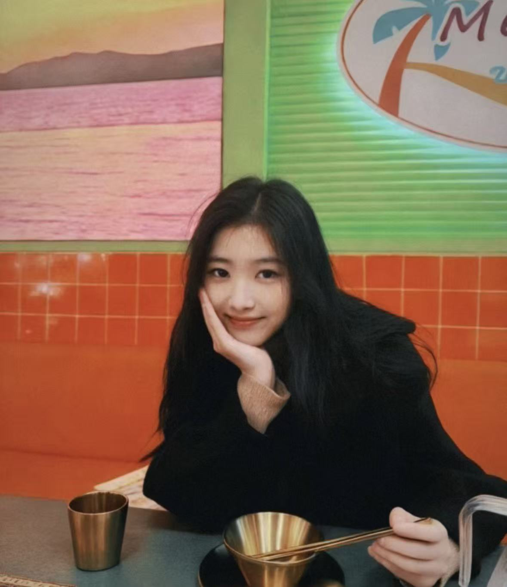

继续整理淘宝工作台
把商品、订单和日常要办的事放在一起，省得来回找。
计算机专业学生 / 做网页，也写代码
你好，我是 jsy，学计算机的。平时做网页、工具和一些和直播、卖茶有关的事情，喜欢先把问题理一理，再动手把它做出来。

THOUGHT / 001
“先把事情说明白，
再开始做。”
01 / 精选作品
这里放着我做过的一些项目，
有些还在继续，有些是阶段性尝试。
给 DIY 饰品项目做的订单管理系统，从下单到库存都在里面。
↗一个同城陪护和代办平台，做过网页端和接口。
↗用手势控制声音的小实验，打开浏览器就能玩。
↗给淘宝业务用的工作台，方便看商品、订单和日常事项。
↗把工程工序整理成 MCP 工作流，方便查步骤、记任务。
↗做茶叶选品和销售，也试着把它讲清楚、卖出去。
↗做过直播，熟悉镜头前表达和跟观众互动。
↗02 / 关于我
我学的是计算机，平时会写前端、做后端，也会自己画页面、理流程。做过订单系统、服务平台、手势音乐实验，还碰过淘宝工作台和 MCP。
我不太追求把页面做得花哨，更关心它好不好用、出了问题能不能找到原因。直播和卖茶也让我发现，技术之外，把话说明白同样重要。
03 / 最近在做
记一下最近手头的事，
以后回头看也方便。
把商品、订单和日常要办的事放在一起，省得来回找。
先把步骤理顺，再看看哪些地方能交给工具处理。
练习怎么把东西介绍清楚，也听听大家真正关心什么。